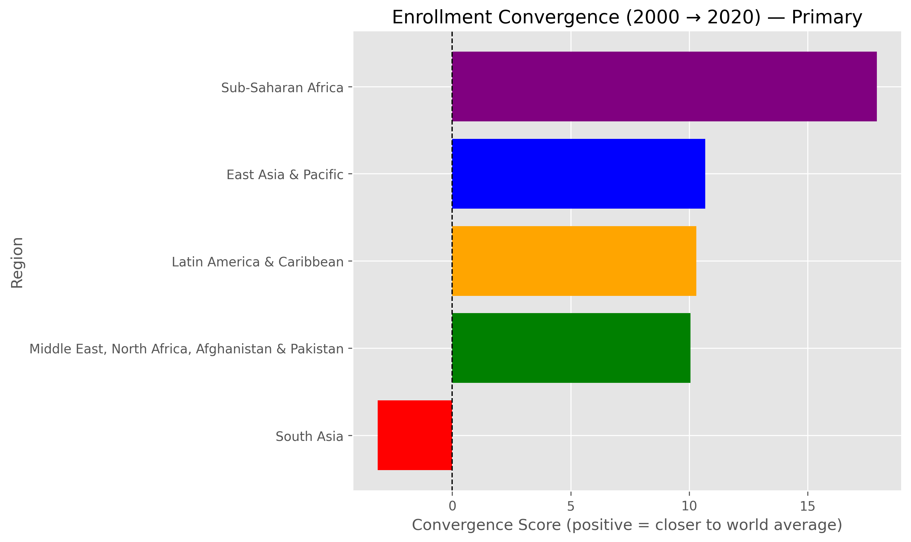
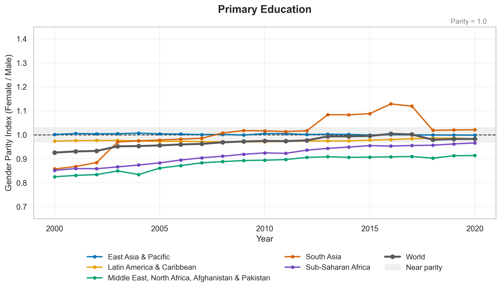
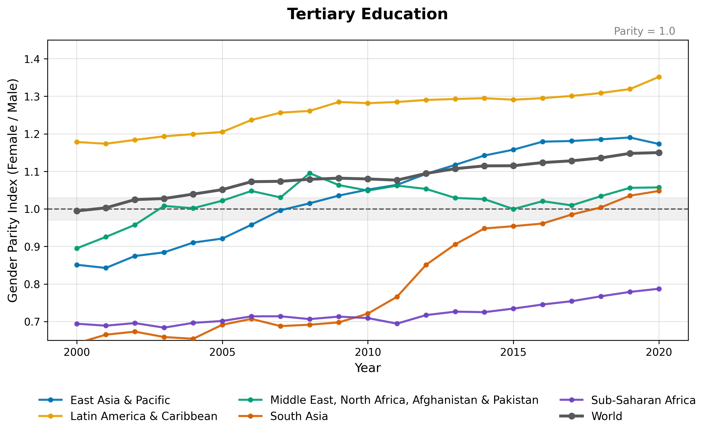

Two Decades of Educational Change: Global Enrollment Trends and Gender Gap Reduction, 2000–2020
Authors
Annie Cao (ID: 2599315)
Vicki Wang (ID: 2581225)
Yan Yang (ID: 2610419)
Gloria Wang (2550999)
1 Introduction
Over the past twenty years, global reports have consistently highlighted that access to education remains uneven across many regions of the world. Earlier analyses consistently showed that developing countries lagged behind global averages in school enrollment, including when examining male and female participation separately.
We focus on five major world regions:
1. East Asia & Pacific
2. Latin America & Caribbean
3. The Middle East & North Africa (including Afghanistan and Pakistan)
4. South Asia
5. Sub-Saharan Africa
We choose these regions because these areas have historically exhibited the most pronounced educational inequalities and have been the primary focus of development assistance and policy reforms. These regions encompass a substantial share of the global population and represent contexts where expanded schooling is expected to have the greatest long-term social and economic impact.
Although several of these regions, such as East Asia & Pacific, have substantially increased public investment in schooling and improved educational attainment, it remains unclear whether these advances have led to true convergence toward global norms. This motivates our first research question: Have enrollment rates in these five regions converged toward the world average from 2000 to 2020 across primary, secondary, and tertiary education?
Achieving gender parity is also a critical component of education equity. International development discussions have emphasized that equal access for girls is essential for long-term improvements in health, labor participation, and economic stability. While some regions have made substantial progress, the persistence and scale of gender disparities vary considerably. In South Asia, for example, notable increases in girls’ schooling have important implications for future demographic and economic outcomes.
Given these mixed patterns, our second research question examines whether female–male enrollment gaps have narrowed from 2000 to 2020 within the same regions.
By evaluating both regional convergence and gender parity, this project seeks to provide a clearer understanding of how global education equity has evolved over the past two decades and to identify where significant challenges still remain. Our overarching goal is to assess whether the world is moving closer to universal and equitable access to education, or whether uneven progress continues to reinforce existing inequalities.
2 Data Description & Cleaning
This project uses school enrollment data from the World Bank World Development Indicators (WDI) database. The dataset includes gross enrollment ratios for three education levels—primary, secondary, and tertiary—, total and by gender. The indicators are:
Primary Education
Total: SE.PRM.ENRR
Male: SE.PRM.ENRR.MA
Female: SE.PRM.ENRR.FE
Secondary Education
Total: SE.SEC.ENRR
Male: SE.SEC.ENRR.MA
Female: SE.SEC.ENRR.FE
Tertiary Education
Total: SE.TER.ENRR
Male: SE.TER.ENRR.MA
Female: SE.TER.ENRR.FE
Data were collected for all available countries over the period 2000–2020 using the wb.data.DataFrame() function. The raw dataset was saved as data/wdi_edu.csv.
Here are our preprocessing steps before analysis:
2.1 Removal of Missing Values
Rows with incomplete observations across any of the enrollment indicators were removed to ensure consistent time-series data. The resulting cleaned dataset (df_clean) contains only complete country-year records for all twenty years.
2.2 Standardizing Indicator Labels
A mapping dictionary was applied to replace WDI indicator codes with more descriptive names such as:
"SE.PRM.ENRR" → "primary"
"SE.PRM.ENRR.FE" → "primary_female"
"SE.SEC.ENRR.MA" → "secondary_male"
"SE.TER.ENRR" → "tertiary"
2.3 Filtering to Target Regions
We filtered our data down to keep only the major global regions:
Sub-Saharan Africa
South Asia
Middle East, North Africa, Afghanistan & Pakistan
Latin America & Caribbean
East Asia & Pacific
Europe & Central Asia
North America
World
2.4 Converting to Long Format
The cleaned regional dataset was reshaped from wide to long form:
Year columns (e.g., "YR2000") were turned into a single year variable.
"YR" prefixes were removed and values were converted to integers.
Data were sorted by Country, series, and year.
2.5 Exporting Final Dataset
The final long-format dataset used for analysis was saved as data/wdi_edu_filtered_long.csv.
Here is summary statistics for the variables we have across all regions from 2000-2020:
import sqlite3import pandas as pddf = pd.read_csv("data/wdi_edu_filtered_long.csv")conn = sqlite3.connect("wdi_edu.db")df.to_sql("wdi_edu", conn, if_exists="replace", index=False)pd.read_sql('''SELECT series, AVG(value) AS mean_rate, MIN(value) AS min_rate, MAX(value) AS max_rateFROM wdi_eduWHERE year BETWEEN 2000 AND 2020GROUP BY series;''', conn)
series
mean_rate
min_rate
max_rate
0
primary
101.106546
79.473808
118.426079
1
primary_female
99.523326
73.061752
125.894310
2
primary_male
102.625246
85.790840
117.201439
3
secondary
73.880423
25.435600
105.108917
4
secondary_female
72.962301
22.674450
104.589317
5
secondary_male
74.752978
28.168131
105.600121
6
tertiary
36.725496
4.384480
86.950279
7
tertiary_female
39.691699
3.595470
101.383179
8
tertiary_male
33.892155
5.179770
74.362297
3 Data Analysis and Interpretation
3.1 Growth Across Education Levels by Region
This table reports the average annual growth in primary, secondary, and tertiary school enrollment rates for each world region between 2000 and 2020. Growth rates are calculated as the year-to-year change in enrollment values, and then averaged over the 20-year period to capture longer-term regional trends. Positive values indicate that enrollment has generally increased over time, while negative values reflect declining or stagnant progress. Comparing growth across regions and education levels highlights where expansion in access to schooling has been fastest and where progress has been more limited.
pd.read_sql('''WITH growth AS ( SELECT region, series, AVG(annual_growth) AS avg_growth FROM ( SELECT region, series, value - LAG(value) OVER (PARTITION BY region, series ORDER BY year) AS annual_growth FROM wdi_edu WHERE year BETWEEN 2000 AND 2020 AND series IN ('primary','secondary','tertiary') ) g WHERE annual_growth IS NOT NULL GROUP BY region, series)SELECT region, MAX(CASE WHEN series = 'primary' THEN avg_growth END) AS primary_growth, MAX(CASE WHEN series = 'secondary' THEN avg_growth END) AS secondary_growth, MAX(CASE WHEN series = 'tertiary' THEN avg_growth END) AS tertiary_growthFROM growthGROUP BY regionORDER BY region;''', conn)
region
primary_growth
secondary_growth
tertiary_growth
0
East Asia & Pacific
-0.508122
1.387767
1.804751
1
Europe & Central Asia
-0.166644
0.397700
1.491138
2
Latin America & Caribbean
-0.489661
0.886855
1.552549
3
Middle East, North Africa, Afghanistan & Pakistan
0.528657
0.525619
0.737428
4
North America
-0.031169
0.326427
0.971567
5
South Asia
0.233246
1.474988
0.949892
6
Sub-Saharan Africa
0.921688
0.963458
0.240672
7
World
0.025631
0.851748
1.011157
Sub-Saharan Africa shows the fastest increase in primary enrollment, with an average annual rise of 0.92 percentage points. This suggests steady and sustained improvement in access to primary education across the region. Sub-Saharan Africa also experienced similar gains in secondary enrollment, although East Asia & Pacific and South Asia outpaced all regions with even higher average yearly increases of 1.39 and 1.47, respectively. For tertiary education, East Asia & Pacific, Latin America & Caribbean, and the global average all exceeded 1 percentage point of growth per year, indicating particularly rapid expansion in higher education access in these regions. Taken together, these trends highlight that while basic education has been improving globally, while Sub-Saharan Africa has prioritized building strong progress at the primary level as a critical foundation for long-term educational development.
3.2 Enrollment Trends Over Time Across Regions (2000–2020)
To evaluate how each region compares to global progress in education access, we examine convergence in primary, secondary, and tertiary enrollment rates over the 20-year period.
The line graphs show how closely each region tracks the world average and whether disparities have narrowed or widened.
Figure 1
As shown in Figure 1, primary enrollment shows clear convergence across regions. Sub-Saharan Africa and the Middle East, North Africa, Afghanistan & Pakistan start well below the world average but improve steadily, reducing the gap by 2020. Latin America & Caribbean remains consistently above the global level but gradually moves closer to it. The differences across regions narrow over time, indicating strong convergence at the primary level.
Figure 2
As illustrated in Figure 2, progress at the secondary level is more uneven. High-performing regions such as Latin America & Caribbean and East Asia & Pacific rise steadily and remain above the world average. Meanwhile, South Asia, the Middle East, North Africa, Afghanistan & Pakistan, and especially Sub-Saharan Africa improve more slowly and remain far below global levels. Convergence is weaker here, and substantial regional disparities persist.
Figure 3
As shown in Figure 3, tertiary enrollment displays the least convergence. Latin America & Caribbean and East Asia & Pacific expand rapidly and widen their advantage over other regions. The Middle East, North Africa, Afghanistan & Pakistan, South Asia, and Sub-Saharan Africa improve but remain far behind. Overall, tertiary education reflects divergence rather than convergence, with inequalities growing over time.
The bar plots summarize how five major world regions (East Asia & Pacific, Latin America & Caribbean, Middle East & North Africa, South Asoa, and Sub-Saharan Africa) progress across education levels. This helps reveal not only which regions are closing historical enrollment gaps but also where disparities have persisted or widened over the past two decades.

Figure 4
As shown in Figure 4, Sub-Saharan Africa displays the strongest convergence toward the world average, followed by East Asia & Pacific and Latin America & Caribbean. The Middle East, North Africa, Afghanistan & Pakistan also shows moderate improvement. South Asia slightly diverges, ending farther from the global baseline than in 2000.
Figure 5
As seen in Figure 5, South Asia exhibits the largest improvement and closes the gap most strongly. Other regions experience smaller positive shifts, except East Asia & Pacific, which diverges because its secondary enrollment rose faster than the world average.
Figure 6
Figure 6 highlights that only South Asia demonstrates meaningful convergence at the tertiary level. All other regions diverge, largely because the world average increased rapidly while regional growth lagged behind.
3.3 Gender Parity in Educational Participation
We assess the evolution of female–male enrollment disparities across five major world regions with historically lower baseline access to education: East Asia & Pacific, Latin America & Caribbean, the Middle East & North Africa (including Afghanistan and Pakistan), South Asia, and Sub-Saharan Africa. The global average serves as a benchmark to contextualize regional progress. Gender disparities are measured using the Gender Parity Index (GPI), defined as female enrollment divided by male enrollment. A value of 1.0 represents gender parity, while values below or above 1.0 indicate male- and female-favored enrollment gaps, respectively. Our analysis examines GPI trends across three educational levels—primary, secondary, and tertiary—between 2000 and 2020.

Figure 7
As shown in Figure 7, primary-level GPI trends reveal substantial convergence toward gender parity across all regions. By 2020, nearly all regions are positioned within the internationally recognized near-parity threshold (0.97–1.03), including the global average, indicating that gender inequality at the point of entry into schooling has been largely eliminated. Latin America & the Caribbean demonstrates a consistently slight female advantage throughout the two decades. East Asia & Pacific and the world average achieved parity by the mid-2000s and maintained it thereafter. Although starting from a relatively disadvantaged position in 2000, South Asia and Sub-Saharan Africa exhibit steady and continuous improvement, closing the enrollment gap substantially by 2020. These patterns suggest that global education initiatives targeting universal primary school access have been effective in reducing structural gender exclusion in early schooling.
Figure 8
Figure 8 shows that while progress is evident at the secondary level, regional disparities remain more persistent than at the primary level. The world average and East Asia & Pacific reached parity by approximately 2010, indicating successful transition for girls into lower-secondary education in these contexts. In contrast, South Asia and Sub-Saharan Africa continue to fall slightly below parity by the end of the time period (approximately 0.94–0.95), despite gradual improvement. The Middle East, North Africa, Afghanistan & Pakistan grouping demonstrates slower convergence toward parity, reflecting continued gendered constraints during adolescence. Latin America & the Caribbean sustains a female-favored balance throughout the period, suggesting comparatively stronger retention of girls beyond primary schooling. These patterns underscore the importance of the primary-to-secondary transition as a critical juncture at which gendered barriers intensify.

Figure 9
At the tertiary level, gender disparities become more pronounced and regionally divergent, as shown in Figure 9. The world average surpasses parity around 2010, reflecting the global expansion of women’s participation in higher education. Latin America & the Caribbean experiences the strongest female advantage, exceeding a GPI of 1.30 by 2020, while East Asia & Pacific and South Asia also cross parity after the mid-2010s, indicating accelerating gains in women’s university enrollment. In stark contrast, Sub-Saharan Africa remains significantly below parity throughout the period, with GPI values generally under 0.90 and only modest improvements toward the end of the decade. These persistent regional inequalities highlight the combined influence of financial pressures, limited tertiary infrastructure, and lower female completion rates at earlier levels, which collectively constrain women’s access to higher education in Sub-Saharan Africa.
4 Results and Discussion
4.1Regional Growth in Enrollment (2000–2020)
Across the five regions analyzed, enrollment increased at all three education levels, though the pace of expansion varied considerably. Sub-Saharan Africa experienced the fastest improvement in primary enrollment, averaging nearly a one-percentage-point rise per year. At the secondary level, East Asia & Pacific and South Asia recorded the largest annual gains, reflecting sustained investments in post-primary schooling. Tertiary expansion was most rapid in East Asia & Pacific and Latin America & Caribbean, each exceeding one percentage point of annual growth. These patterns indicate that while all regions made progress, the speed and depth of educational expansion diverged across levels.
4.2Enrollment Convergence Relative to the World Average
Line graphs of regional enrollment trajectories show substantial convergence at the primary level. Most regions began the period below or above the global average but moved closer to it over time, driven by widespread improvement in basic education. Convergence weakened at the secondary level, where disparities persisted between higher-performing regions (Latin America & Caribbean, East Asia & Pacific) and those lagging behind (South Asia, the Middle East, North Africa, Afghanistan & Pakistan, Sub-Saharan Africa). At the tertiary level, divergence was pronounced: Latin America & Caribbean and East Asia & Pacific expanded rapidly, while other regions improved only modestly, widening global inequalities in higher education access. Bar plots corroborate these trends. Primary convergence was strongest for Sub-Saharan Africa and East Asia & Pacific, whereas secondary convergence was driven mainly by South Asia. At the tertiary level, only South Asia showed measurable convergence; all other regions diverged from the global trend.
4.3Gender Parity in Educational Participation
Primary-level GPI values indicate near-universal movement toward gender parity across regions. By 2020, nearly all regions fall within the near-parity band (0.97–1.03). Secondary-level GPI trends show partial convergence, with Latin America & Caribbean consistently favoring girls and East Asia & Pacific reaching parity by the mid-2000s. In contrast, South Asia and Sub-Saharan Africa remain slightly below parity throughout, despite clear upward trajectories. At the tertiary level, gender disparities widen across regions. Latin America & Caribbean and East Asia & Pacific display strong female advantage, while Sub-Saharan Africa remains far below parity, indicating persistent and structural barriers preventing women’s participation in higher education.
The results show that while educational access has expanded worldwide, progress has been uneven across levels and regions. Primary schooling exhibits the strongest convergence, with nearly all regions approaching the world average by 2020. And this reflects the effectiveness of global initiatives aimed at universalizing basic education.
In contrast, secondary enrollment shows more limited convergence. Although regions such as Latin America & Caribbean and East Asia & Pacific maintain high participation, South Asia, the Middle East, North Africa, Afghanistan & Pakistan, and Sub-Saharan Africa continue to lag behind. These persistent disparities highlight structural barriers, such as financial constraints, limited school capacity, and gendered labor expectations, that become more pronounced in adolescence.
Tertiary education displays the greatest divergence. Rapid expansion in East Asia & Pacific and Latin America & Caribbean has widened global inequalities, while other regions show much slower progress, suggesting that higher education remains closely tied to national economic capacity and long-term policy investment.
Gender parity patterns reinforce these trends. While most regions reach near parity at the primary level, gaps persist at secondary school and widen significantly at the tertiary level, particularly in Sub-Saharan Africa, showing that early gains for girls do not consistently translate into equal opportunities at higher levels, where financial, cultural, and institutional barriers intensify.
5 Conclusion
Our project examined regional enrollment growth, convergence toward global averages, and gender parity across primary, secondary, and tertiary education from 2000 to 2020. The findings show clear global progress at the foundational level: primary enrollment has expanded broadly, and most regions now achieve gender parity. However, disparities widen as education levels advance. Secondary enrollment shows mixed convergence, and tertiary education exhibits significant divergence, with only a few regions experiencing rapid expansion. Gender inequalities follow a similar pattern. While primary-level parity is nearly universal, gaps persist at the secondary level and become especially pronounced in tertiary schooling, particularly in Sub-Saharan Africa. We think results highlight that early access to education has improved substantially, but equal opportunities for advancement remain uneven. The trends suggest that achieving global education equity requires shifting attention from universal primary schooling toward strengthening secondary and tertiary systems, reducing structural barriers, and ensuring equitable gender pathways across all levels of education!